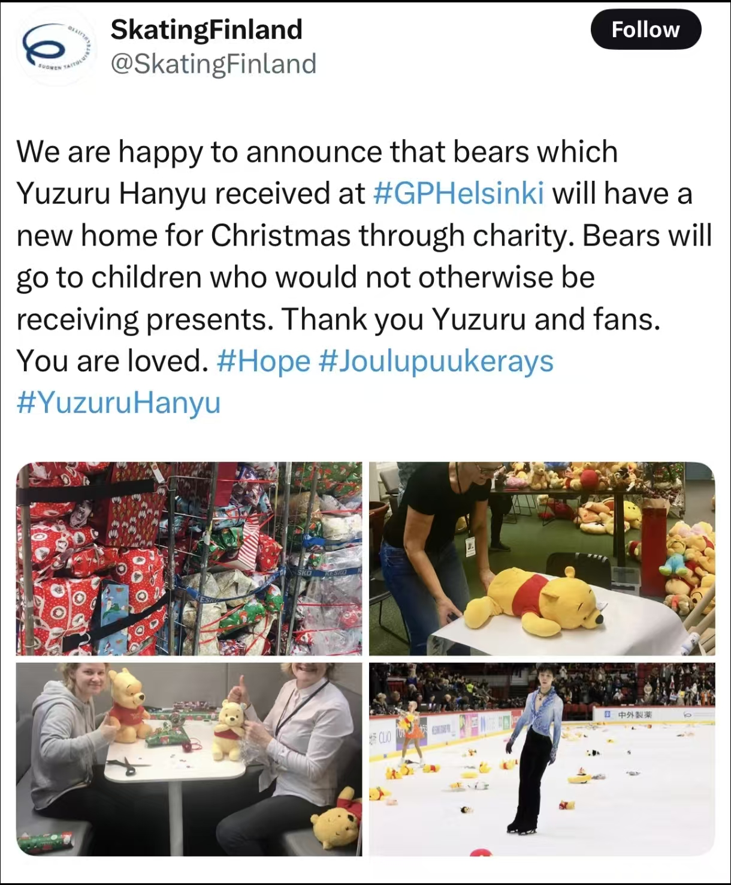

羽生结弦在生活中是一位细心、谦逊且极具责任感的人：

转为职业选手后，羽生结弦的人生重心从竞技赛场转向花滑文化的传承与推广：
1. 推出个人冰演品牌「PROLOGUE」，走遍全球进行巡演，让更多人感受花滑的魅力；
2. 开设花滑训练营，面向青少年选手，分享自己的训练方法和比赛经验；
3. 出版自传《羽生结弦：我的花滑之路》，记录自己的职业历程，传递坚持与热爱的信念；
他曾说，即使离开竞技赛场，也会永远留在花滑领域，通过自己的努力，让这项运动被更多人看见。